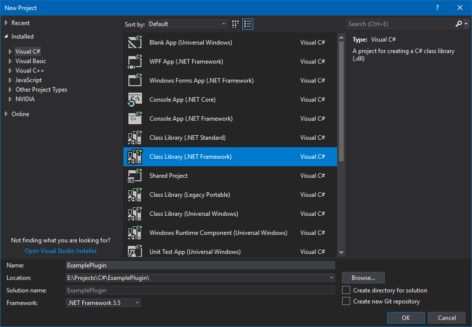

Setting up the development environment
Writing BepInEx plugins starts with creation of the code projects. In this guide, we will be using Visual Studio to create our plugins.
Creating a solution
First, we'll create a new solution in Visual Studio.
Open up Visual Studio and select File > New > Project:

From there, select C# > Class Library as the target project.
You might now notice that there are multiple Class Library templates: one for .NET Standard, one for .NET Framework and some other ones.
The one you select depends on the game and on the plugin you're trying to create.
In essence, select Class Library (.NET Standard) if the game you're targeting has netstandard.dll present in its <GameName>_Data\Managed folder.
Otherwise, select Class Library (.NET Framework).
Next, fill in the details of your plugin (name, project location).
If you have selected Class Library (.NET Framework) as the project type, you will also notice the Framework option.
This option specifies the version of the .NET Framework that the plugin will be compiled against.
Different Unity may require you to use different .NET Framework versions. As a rule of thumb, you can use .NET Framework 3.5 in all Unity games, but you will get the least API available. In order to determine the exact version of .NET Framework to use, check the file version of mscorlib.dll in <GameName>_Data\Managed folder: if it's 4.0.0.0 or newer, you can target .NET Framework 4.x (usually 4.6).
Note
Technically, it is possible to target both .NET Standard and .NET Framework games with a single build, but there are a lot of considerations to take into account. Refer to explanation of different .NET profiles in Unity for more information.
In the case of this test plugin, we'll be writing a plugin for Risk of Rain 2.
Since Risk of Rain 2 is a .NET Standard game (i.e. there is netstandard.dll in Risk of Rain 2_Data\Managed folder), we will choose Class Library (.NET Standard) as the template.
Press OK, which will create the solution folder and the main C# project.
Gathering DLL dependencies
Before diving into programming, we need to import any DLLs that we will be using.
First, head over to the folder you created your solution in. It should look like this:

Tip
If you forgot the location of the solution, you can right click on the solution file in Visual Studio and select Open Folder in File Explorer:

Next, create a Libs folder in the solution folder. That folder will contain all the required DLLs that this project will depend on.
Find and copy the following DLLs into the folder:
BepInEx.dll: found inBepInEx\corefolder (you can download BepInEx as per the installation instructions)UnityEngine.dll(andUnityEngine.CoreModule.dllif needed): found in the game's<Game Name>_Data\Managedfolder- (Optional) Any additional DLLs and dependencies you think you need (you can always add more DLLs later)
Assembly-CSharp.dllcontains game-specific code0Harmony.dllandBepInEx.Harmony.dllallow to patch methods while the game is running. Refer to Harmony wiki for more details.
In the end, your Libs folder might look something like this (for example):

Warning
If you are planning on publishing the source code, do not include the DLLs in the Libs folder.
Not only is it unnecessary, but Assembly-CSharp.dll contains game code, which technically is illegal to share without an explicit permission from the game developers.
If you absolutely must include the DLLs, it is suggested to remove the code and only distribute the API contents.
Importing DLL dependencies into the project
Finally, open your solution in Visual Studio. In there, right click on the Dependencies item in the Solution Explorer (or References if your project is based on .NET Framework) and select Add Reference...:

In the opened Reference Manager, click the Browse... button, locate and select all assemblies in Libs folder and click Add.
Finally, click OK to close the Reference Manager and you will have all your dependencies imported: